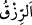

“–Dımaşklı Mekhûl.” dedim.
“–O, Araplar’dan mı mevâlîden mi?” diye sordu.
“–Abdünûbî mevâlîsindendir. Hüzeyl kabilesinden bir kadın onu azad etti.” dedim.
Onun hakkında da önceki söylediklerinin benzerini söyledi. Sonra:
“–Cezire ahalisine kim öncülük ediyor?” diye sordu.
“–Meymun b. Mehran.” dedim.
“–O, Araplar’dan mı mevâlîden mi?” diye sordu.
“–Mevâlîden.” dedim.
“–Peki bizim haremimizin halkına kim öncülük ediyor?” diye sordu.
“–Dahhak b. Müzâhim.” dedim.
“–O, Araplar’dan mı, mevâlîden mi?” dedi.
“–Mevâlîden.” dedim.
“–Basra ahalisine kim öncülük ediyor?” dedi.
“–Hasen b. Ebü’l-Hasen.” dedim.
“–O, Araplar’dan mı mevâlîden mi?” dedi.
“–Mevâlîden.” dedim.
“–Vah sana! Peki Kûfe ahalisinin öncüsü kim?” diye sordu.
“–İbrahim en-Nehâî.” dedim.
“–O, Araplar’dan mı mevâlîden mi?” dedi.
“–Araplar’dan.” dedim.
“–Vah sana ey Zührî, beni rahatlattın. Vallahi (böyle giderse) mevâlî, ekabire öncülük
edecekler. Hatta Araplar yerde otururken onlara minberler üzerinden hitapta
bulunacaklar. Buna karşılık olarak Zührî:
“–Ey müminlerin emiri, bu ancak Allah’ın emri ve dînidir. Onu hıfzedip koruyan
önder olur, zâyi eden ise geride kalır.” cevabını verdi.
Âyette suyun ne kadar büyük bir nimet olduğu, susuzluk ve açlık korkusunun şeytandan
ve onun vesvesesinden ileri geldiği beyan edilmektedir. Çünkü bir kimsenin Allah’a
tevekkülü sağlam olduğu zaman ona göre yokluk ve varlık eşit olur. Çünkü Allah
Teâlâ’nın isimlerinden biri “” (yaratıcı), diğer bir ismi ise “” (rızık
veren)tır.
Denildiğine göre aslanda, açlık ve susuzluğa karşı diğer yırtıcı hayvanlarda benzeri
bulunmayan bir sabır vardır. Başka bir hayvanın yakaladığı avdan asla yemez. Kendi
yakaladığından yiyip doyunca onu bırakır, bir daha da ona dönmez. Köpeğin ağzının
değdiği sudan içmez. Bu sıfatlarda bir müminin aslandan daha aşağı olmaması gerekir.
Kişi halini güzelleştirmeye çalışmalı
Artık zamandan ne yardım ne de meded ummalı